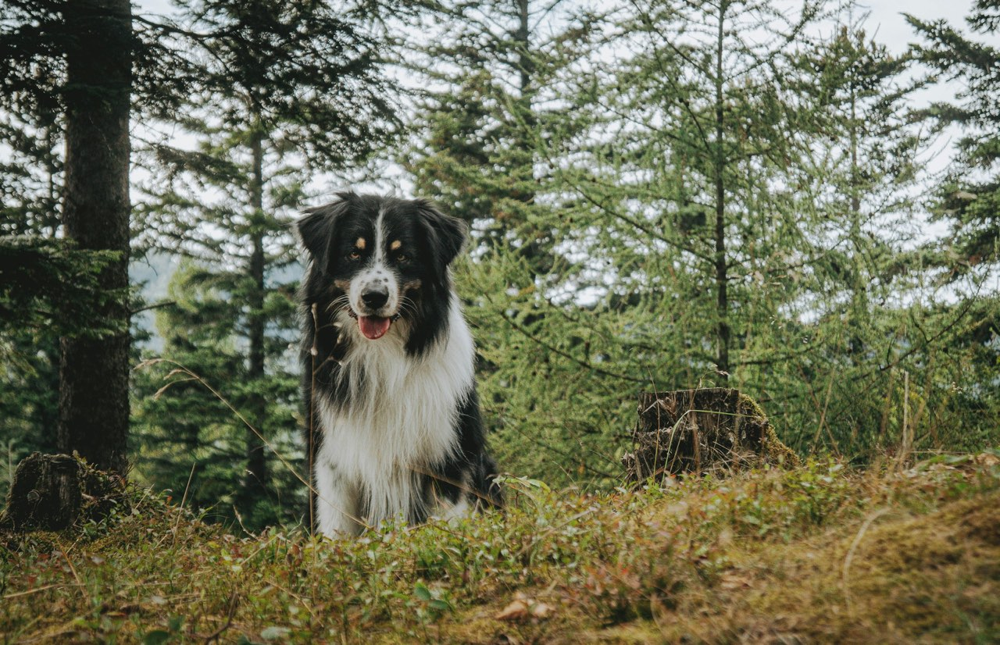
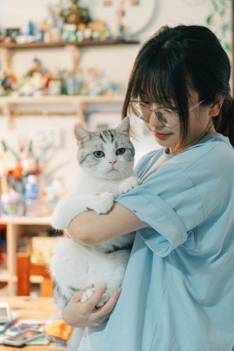
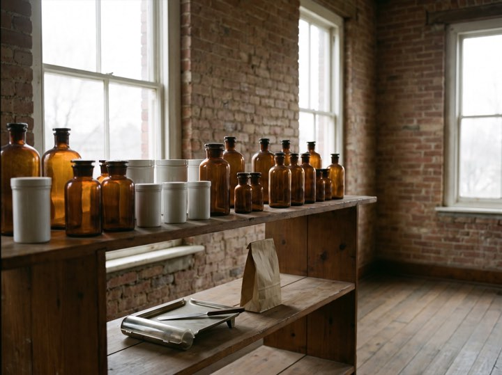
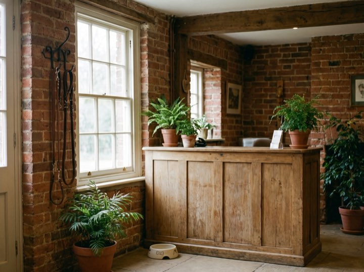
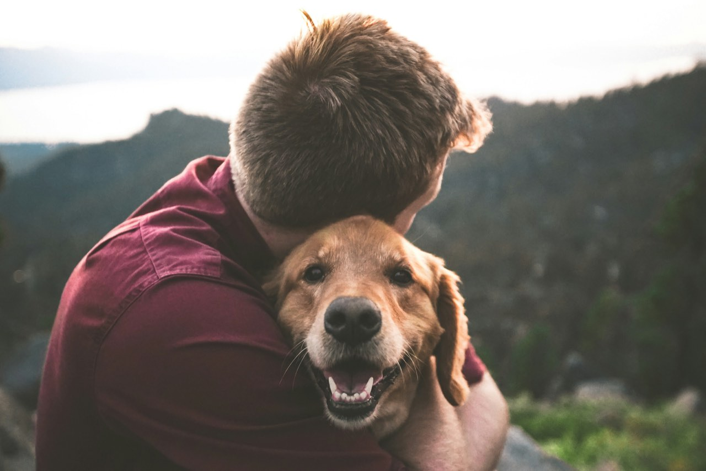

Nobody should have to phone to order a refill.
Full-service small animal care. Refills, records, reminders and booking all happen online, so the front desk is free for the people standing in front of it with a frightened animal.
01 — Services
Care we provide
Routine to surgical, with the same team seeing your animal each time wherever we can manage it.
- 01
Wellness & vaccination
Annual exams, vaccines and parasite prevention on a schedule we track for you, so you get a reminder rather than a guilty realisation.
- 02
Puppy & kitten packages
First visit free. Everything the first year needs bundled at a set price, including spay or neuter and microchipping.
- 03
Dentistry
Under anaesthetic with full monitoring and dental radiographs. Most dental disease is invisible above the gumline.
- 04
Surgery & diagnostics
In-house lab, digital radiography and ultrasound, so most answers come the same visit rather than next week.
02 — Results
Accredited by
- AAHA Accredited
- Fear Free Certified
- AVMA Member
- Cat Friendly Practice
03 — Process
Your first visit
Especially for a first pet, where nobody tells you what actually happens.
Book online
Pick a real slot on a real calendar, any hour. You get a confirmation, not a promise to call you back.
Come in
Bring any records you have. First visits run long on purpose, because we’d rather answer everything now.
A plan, not a bill
You get a written care plan with costs before anything is done, and we’ll tell you what can wait.
Stay in touch
Reminders when things are due, refills online, and a direct line for the questions that feel too small to phone about.

04 — Without the phone
Refills, bookings, and the counter that handles them.
Order the refill online and collect it here. Book the slot online and walk straight into this room.






05 — Contact
New here, or need a vet today?
We’re accepting new patients and hold same-day slots for sick visits. Book online in about a minute, or call and we’ll sort it.
Emergencies after hours: call and our recording routes you to the on-call emergency hospital.